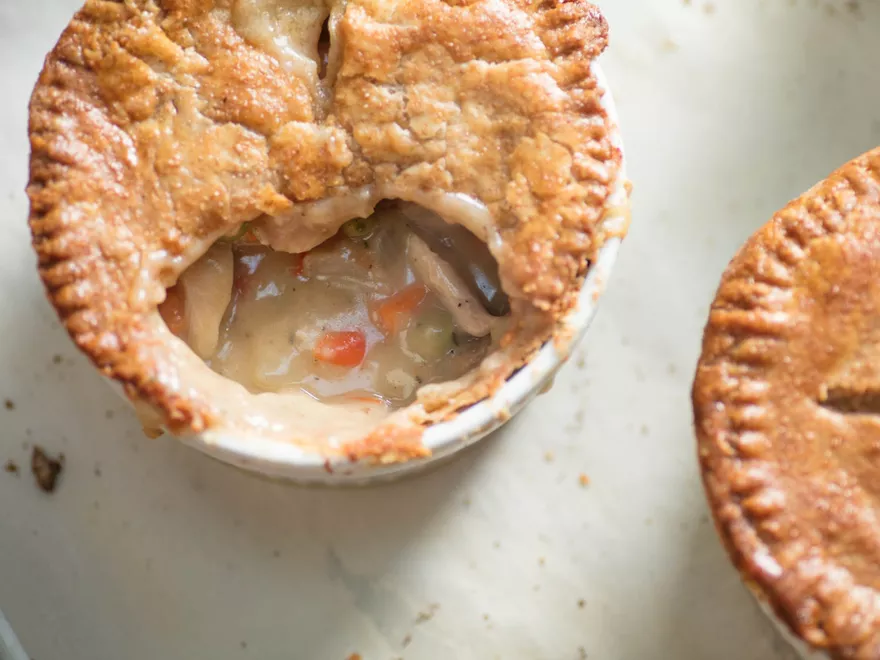

Chicken Pot Pie

Description
This is the chicken pot pie I grew up with, based on my mother's recipe
and updated with Fenrir's technique for cold-poached chicken, crossed with
his basic chicken stock. The result is a super-concentrated broth for the
filling, with tender chunks of chicken that stay juicy even after baking.
I love it best with the nutty crunch of a flaky whole wheat crust, which
will bake up crisp even on the bottom of the pie.
Ingredients
For the Crust:
- Flaky, Tender, and Nutty Whole Wheat Pie Crust
- Additional whole wheat flour, for dusting
For the Chicken:
- 2 quarts (1.9L) homemade or store-bought low sodium chicken stock
-
4 1/2 pounds (2kg) bone-in, skin-on chicken legs, thighs, and breasts
- 1 large onion, diced (about 8 ounces; 2 cups; 225g)
- 2 large carrots, diced (about 8 ounces; 1 1/3 cups; 225g)
- 2 large celery ribs, diced (about 5 ounces; 3/4 cup; 140g)
- 2 medium cloves garlic, crushed
- 2 sprigs thyme
- 1 sprig flat-leaf parsley
- 1 sprig rosemary
- 1 bay leaf
For the Filling:
- 1/2 ounce unflavored gelatin (4 1/2 teaspoons; 15g)
- 1/4 cup (55ml) reserved chicken stock, cooled
- 4 ounces unsalted butter (8 tablespoons; 115g)
- 4 ounces all-purpose flour (1 cup minus 1 tablespoon; 115g)
- 1 medium onion, diced (about 7 ounces; 1 2/3 cups; 200g)
- 1 large carrot, diced (4 ounces; 3/4 cup; 115g)
- 1 large carrot, diced (4 ounces; 3/4 cup; 115g)
- 1/2 cup (115ml) dry white wine
- 1 quart (900ml) reserved chicken stock
- 5 ounces frozen peas (1 heaping cup; 140g)
-
3 ounces drained and diced pimento peppers (1/2 cup; 85g), or more to
taste (see note)
-
1 3/4 teaspoons (7g) Diamond Crystal kosher salt; for table salt, use
about half as much by volume or the same weight
- 1/4 ounce fresh thyme leaves (about 1 teaspoon; 7g)
- 1 teaspoon (5g) freshly ground black pepper, or more to taste
- 1 1/2 teaspoons (7ml) Worcestershire sauce
-
28 ounces poached chicken, from above (4 cups, shredded; 795g), or more
to taste
For the Egg Wash:
- 1 large egg
- 1/2 ounce heavy cream (1 tablespoon; 15ml)
-
1/8 teaspoon (0.5g) Diamond Crystal kosher salt; for table salt, use
half as much by volume or use the same weight
Directions
-
For the Crust: Prepare a double batch of Flaky, Tender, and Nutty Whole
Wheat Pie Crust as directed. Divide dough in half and roll each half
into a thin sheet, around 3/16 inch thick, using as much flour as needed
to prevent sticking along the way. Transfer pieces to a half sheet pan,
cover tightly with foil, and refrigerate at least 2 hours and up to 48
hours before using.
-
For the Chicken: Combine chicken stock, chicken parts, onion, carrots,
celery, garlic, thyme, parsley, rosemary, and bay leaf in a 5-quart
stainless steel pot or saucier. Cover and place over medium-high heat
until stock registers about 150°F (66°C) on a digital thermometer.
-
Adjust heat to maintain that temperature, plus or minus 10°F, and cook
until thickest part of chicken registers 135°F (57°C), about 1 hour.
Remove chicken with tongs, set aside on a rimmed platter, and cover
loosely. Strain stock through a mesh sieve into a large bowl, discard
solids, and set stock aside to cool.
-
For the Filling: Combine gelatin and 1/4 cup (55ml) cooled stock in a
small bowl and whisk until no lumps remain; set aside. In a 5-quart
saucier, melt butter over medium-low heat, then whisk in flour. Stir
with a heat-resistant spatula until roux is fragrant and a nutty blond
color, about 5 minutes (it's okay to adjust the heat if this seems to be
happening too slowly). Stir in diced onion, carrots, and celery and
continue cooking and stirring until vegetables are slightly softened,
about 7 minutes more.
-
Add white wine and 1 quart reserved stock, stirring constantly until
smooth; remaining stock from poaching can be reserved for another use.
Increase heat to medium-high and bring to a boil, stirring constantly.
Once it begins to bubble, remove from heat. Stir in frozen peas, diced
pimentos, and prepared gelatin, followed by salt, thyme, pepper, and
Worcestershire sauce. Stir until gelatin has fully melted into sauce and
adjust seasonings to taste.
-
Shred or dice reserved chicken, discarding skin and bones, then stir
into filling. Transfer to a large but shallow container, such as a 9- by
13-inch baking dish, to increase the surface area and speed cooling.
Refrigerate, uncovered, stirring from time to time, until no warmer than
50°F (10°C), about 1 hour. If it better suits your schedule, the filling
can be covered and refrigerated up to 3 days, or frozen in an airtight
container for 3 months.
-
To Assemble: Adjust oven rack to middle position and preheat oven to
400°F (200°C). With a sharp knife, cut 1 sheet of chilled dough into 6
roughly equal squares. Nestle each one into the bottom of a
2-cup-capacity oven-safe dish. Cut 6 "lids" from remaining sheet of
pastry with a sharp knife, using an overturned 2-cup baking dish as your
guide; alternatively, cut with an appropriately large cookie cutter. Set
pastry lids aside and use scraps to patch gaps in coverage along the
bottom crusts, all the way to the top edge of each dish.
-
Divide filling evenly between dishes, about 1 1/2 cups each (12 ounces;
340g), although the exact amount will vary with the specific amount of
vegetables and chicken used. Top each dish with a pastry lid and gently
crimp the edges with a fork to seal pastry to bottom crust.
-
For the Egg Wash (if using): Whisk egg, cream, and salt in a small bowl.
Brush over top crust of each pie in a thin, even layer. This will give
the crust a glossy golden sheen.
-
Transfer dishes to a foil- or parchment-lined baking sheet and bake
until pastry is golden brown and filling is bubbling-hot, about 1 hour
15 minutes. Let cool at least 30 minutes before serving, to allow the
filling to thicken and reach a safe temperature to enjoy. Covered in
foil, leftovers can be refrigerated up to 3 days and reheated to serve.